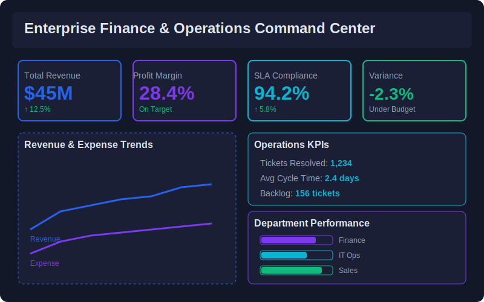

Visualizations
Dashboard Screenshots

Executive Dashboard Overview

Revenue, Expense & Profit Trends

Quarterly Variance Analysis

Profit Margin Analysis by Department

Regional Performance Comparison

Operations KPIs & SLA Analysis